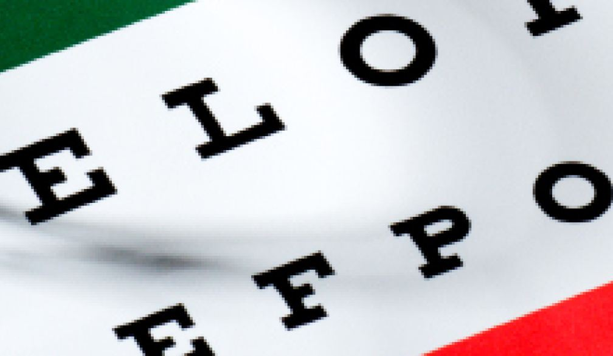

or·tho·keratol·o·gy
A focused solution.
Eunjie Song
Spring 2009

Nearsightedness, also known as myopia, is the most prevalent
vision disorder in the United States (US), according to a clinical
study by the National Eye Institute. About 25 percent of all persons in
the US are myopic. Currently, myopia is most commonly corrected with
eyeglasses, contact lenses, or in some cases, refractive surgery
(namely LASIK). Yet there is also a fourth option that few people are
aware of: orthokeratology, or Ortho-K. Orthokeratology uses rigid
gas-permeable contact lenses to improve vision by reshaping the cornea.
The lenses are normally worn only at night during sleep resulting in
the cornea retaining the improved form such that no other form of
vision correction is necessary during the day.
Although not widely publicized in the US market,
orthokeratology is not a new field. Beginning in the 1960s, a group of
clinicians established that myopia could be curbed, and possibly
corrected, by fitting specially designed contact lenses to induce
corneal flattening. This means that the lenses compress the cornea,
making it flatter and thereby reducing the refractive power of the eye,
or the degree to which the lens converges light. Since myopia results
from an increased refractive power, the treatment counters the
myopia-causing refraction and corrects vision.
Early advocates of orthokeratology claimed that such corneal
changes were often permanent without adversely affecting the cornea,
but further investigations have proven otherwise. The Berkeley
Orthokeratology Study, conducted between 1978 and 1979 and published in
the American Journal of Optometry and Physiological Optics, revealed
that the initial ocular characteristics steadily returned to baseline
levels after removal of the lenses. “When we conducted the studies,
virtually everyone had a remission back to baseline on average of a
month,” says Kenneth A. Polse, OD, MS, Foundation of the American
Academy of Ophthalmology, who had conducted the study at Berkeley. “It
may take one or two months to go exactly back to zero, but if you were
five percent off, you would not be very happy.” Subsequent studies also
support the regression of vision after the discontinuation of the
orthokeratology lens.
Nevertheless, the treatment in general has had positive
feedback. “[The patients] love the freedom of seeing during the day
without the burden of eyeglasses or contact lenses,” says Jeffrey J.
Walline, OD, PhD, Ohio State University, College of Optometry.
According to Walline, Ortho-K is popular among athletes as an
alternative to contact lenses, which have the risk of falling out or
being shattered in the middle of a sports performance. “It is great for
swimmers because wearing contact lenses in the pool is not ideal. I
primarily recommend it to children, [who] have no other means of seeing
clearly without glasses or contact lenses.”
Still, no solution is perfect, and such freedom has its
disadvantages. Although almost all of the side effects are temporary,
the drawbacks include blurry vision while patients adapt during the
first few weeks. The most frequent complaint is variable vision
correction, resulting from the patient sleeping in a certain position
that causes the contact lens to sit differently and misshape. This
usually affects only one eye and goes mostly unnoticed by patients. It
can also be treated with minor adjustments to the Ortho-K contact lens
parameters. In the paper Reversibility of Effects of Orthokeratology on
Visual Acuity, Refractive Error, Corneal Topography, and Contrast
Sensitivity published in the July 2008 edition of Eye & Contact
Lens: Science & Clinical Practice, Yasuko Kobayashi, MS and
colleagues of Yamaguchi University in Yamaguchi, Japan, concluded that
although overnight orthokeratology improves uncorrected visual acuity
and reduced refractive error, it increases corneal irregularity and
impaired contrast sensitivity at the same time. Again, the changes in
visual function and corneal shape reverted to baseline after ceasing
treatment, and patients were never aware of any difference.